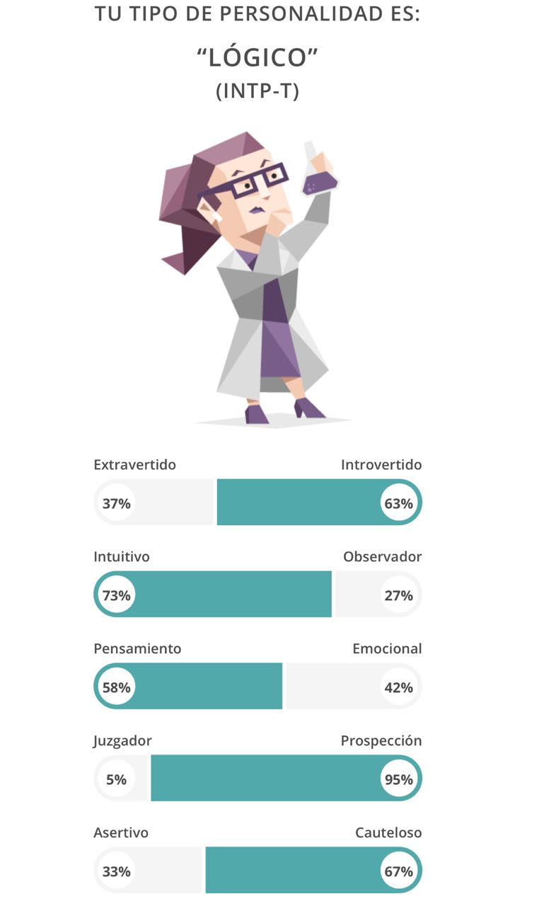

Demografía: ISC, 20 años, estudiante de ingeniería. Geografia: Jalisco Perfil psicografico: Clase social alta-media Estilo de vida: videojuegos/estudiar Motivaciones: tener buenas calificaciones Relación con producto: "Es una herramienta más" Proeficiencia tecnologica: alta

Referentes: Internet
Influencias/Representaciones: Intenet, compañeros de clase, maestros
Comunicarse por correo, demasiado formal y el usuario es timido
Pasos extra, el usuario es muy practico
Iphone/Android
Computadora
General: No desperdiciar tiempo
Producto: Acceder a su contenido academico y a sus tareas pendientes rapidamente
Tener el menor número de pasos posibles
Organizar tareas y actividades y recordarle al usuario
El usuario no ha tenido experiencia con el producto
Apps de educación
Herramientas
Juegos
WhiteBoard
WhiteBoard es el nuevo LMS diseñado exclusivamente para facilitar la vida del alumno y mejorar su experiencia estudiantil
ya que cuenta con herramientas core que ayudan a llevar un mayor control de las tareas y trabajar más eficientemente.
En el libro "Aplicaciones de la tecnología educativa en diversos ambientes
de aprendizaje", alumnos de maestría del
Tecnológico de Monterrey elaboraron una investigación sobre factores clave en
la implementación de tecnología educativa.
Herramientas y equipos deben de apoyar a la enseñanza de manera eficiente
Las destrezas y conocimientos que son necesarios para manejar o utilizar las herramientas de manera eficiente.(Tanto el alumno como el docente deben de ser capaz de utilizar las herramientas a la perfección)
Soporte humano para hacer el uso más efectivo de estas herramientas, esto incluye personal técnico, como por ejemplo profesores expertos en contenido.
Comprensión de los procesos de enseñanza y aprendizaje, de cómo se seleccionan y usan de manera apropiada estas herramientas para apoyar estos procesos.
Nuestro proyecto tiene un fuerte impacto social debido a que afecta en la calidad de vida del alumnado y del docente, además de que aunque este problema lo analizamos y estudiamos dentro de
nuestra universidad, la verdad es que se presenta en cualquier institución educativa que implementa cualquier LMS(ITESO, Tec Milenio, UVM, UADY, UNAM, etc.), por lo que
del solucionar el problema, no sólo ayudariamos a nuestra comunidad estudiantil sino a cientos más, potencialmente miles.
 By Global Panorama
By Global Panorama